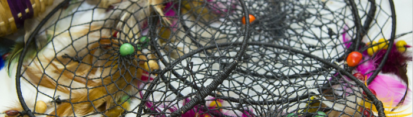

O artesanato indígena é uma janela para os conhecimentos ancestrais que são transmitidos de geração em geração. Cada peça produzida é carregada de simbolismo e significado, representando os valores, rituais e histórias que moldam a vida dessas comunidades. Essa riqueza cultural, muitas vezes intrincada e repleta de detalhes, convida todos nós a explorar um mundo de sabedoria que encontra sua expressão na arte manual.

É importante destacar que o artesanato indígena não é apenas uma atividade artística, mas também uma fonte de sustento para muitas famílias indígenas. A venda dessas obras de arte não só apoia a continuidade das tradições culturais, mas também contribui para o bem-estar econômico das comunidades, permitindo-lhes enfrentar os desafios modernos com maior resiliência.